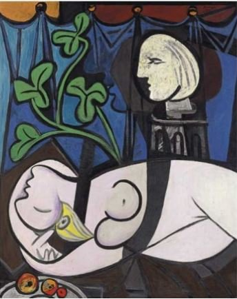

|

|
Detalle
Historia |
El artista pintó el cuadro poco después de cumplir 50 años, cuando el romance ya tenía cinco de historia, en uno de los mejores y más prolíficos momentos de su vida.
La obra es un retrato de Marie-Thérèse Walter, joven a la que Picasso conoció mientras estaba casado con la bailarina Olga Khoklhova y que se convirtió en su amante con apenas 17 años. |
| Descripción |
Lienzo de grandes dimensiones (160 cm x 130 cm) |
| Nombre |
Desnudo, hojas verdes y busto |
| Precio |
80 millones de euros |
| Técnica usada |
Cubismo |
| Fecha |
8 de marzo de 1932 |
|